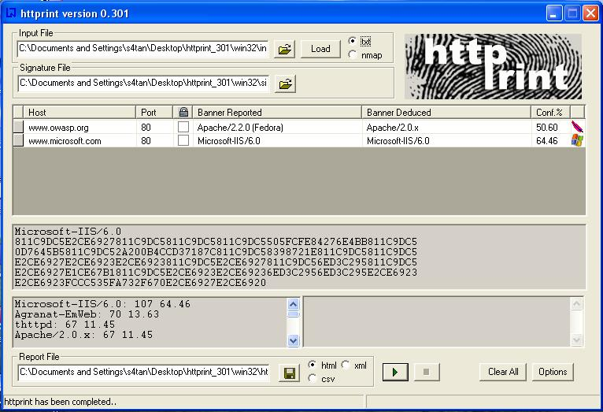
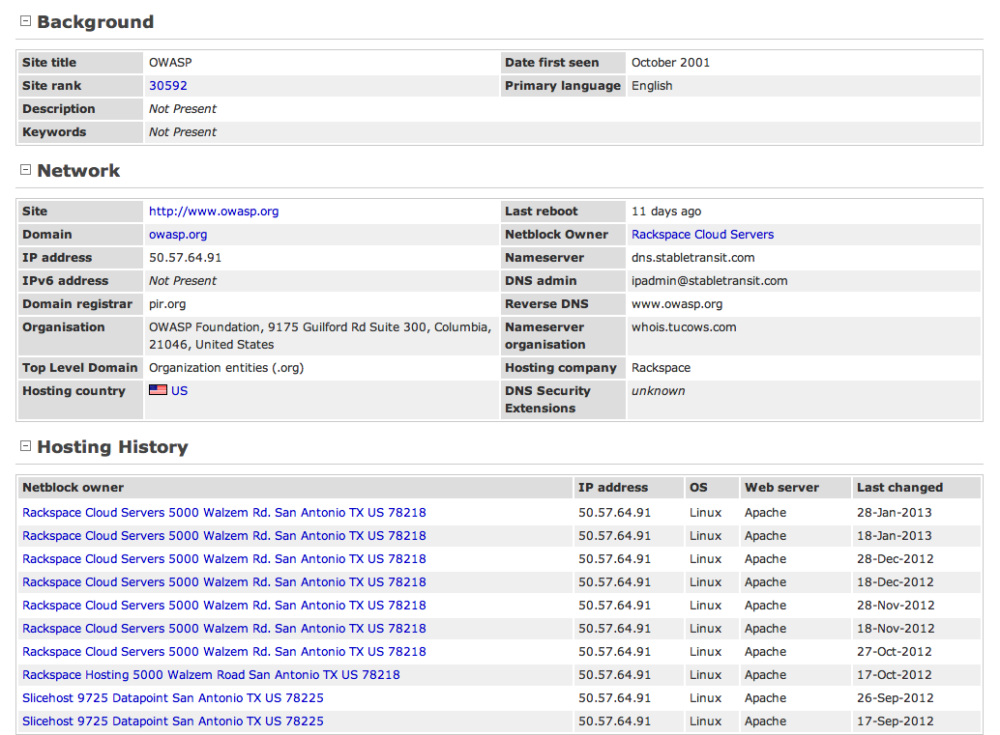

4.2.2 Fingerprint Web Server (OTG-INFO-002)
Summary
Web server fingerprinting is a critical task for the penetration tester. Knowing the version and type of a running web server allows testers to determine known vulnerabilities and the appropriate exploits to use during testing.
There are several different vendors and versions of web servers on the market today. Knowing the type of web server that is being tested significantly helps in the testing process and can also change the course of the test. This information can be derived by sending the web server specific commands and analyzing the output, as each version of web server software may respond differently to these commands. By knowing how each type of web server responds to specific commands and keeping this information in a web server fingerprint database, a penetration tester can send these commands to the web server, analyze the response, and compare it to the database of known signatures. Please note that it usually takes several different commands to accurately identify the web server, as different versions may react similarly to the same command. Rarely do different versions react the same to all HTTP commands. So by sending several different commands, the tester can increase the accuracy of their guess.
Test Objectives
Find the version and type of a running web server to determine known vulnerabilities and the appropriate exploits to use during testing.
How to Test
Black Box testing
The simplest and most basic form of identifying a web server is to look at the Server field in the HTTP response header. Netcat is used in this experiment.
Consider the following HTTP Request-Response:
$ nc 202.41.76.251 80
HEAD / HTTP/1.0
HTTP/1.1 200 OK
Date: Mon, 16 Jun 2003 02:53:29 GMT
Server: Apache/1.3.3 (Unix) (Red Hat/Linux)
Last-Modified: Wed, 07 Oct 1998 11:18:14 GMT
ETag: "1813-49b-361b4df6"
Accept-Ranges: bytes
Content-Length: 1179
Connection: close
Content-Type: text/html
From the
Server field, one can understand that the server is likely Apache, version 1.3.3, running on Linux operating system.
Four examples of the HTTP response headers are shown below.
From an
Apache 1.3.23 server:
HTTP/1.1 200 OK
Date: Sun, 15 Jun 2003 17:10: 49 GMT
Server: Apache/1.3.23
Last-Modified: Thu, 27 Feb 2003 03:48: 19 GMT
ETag: 32417-c4-3e5d8a83
Accept-Ranges: bytes
Content-Length: 196
Connection: close
Content-Type: text/HTML
From a
Microsoft IIS 5.0 server:
HTTP/1.1 200 OK
Server: Microsoft-IIS/5.0
Expires: Yours, 17 Jun 2003 01:41: 33 GMT
Date: Mon, 16 Jun 2003 01:41: 33 GMT
Content-Type: text/HTML
Accept-Ranges: bytes
Last-Modified: Wed, 28 May 2003 15:32: 21 GMT
ETag: b0aac0542e25c31: 89d
Content-Length: 7369
From a
Netscape Enterprise 4.1 server:
HTTP/1.1 200 OK
Server: Netscape-Enterprise/4.1
Date: Mon, 16 Jun 2003 06:19: 04 GMT
Content-type: text/HTML
Last-modified: Wed, 31 Jul 2002 15:37: 56 GMT
Content-length: 57
Accept-ranges: bytes
Connection: close
From a
SunONE 6.1 server:
HTTP/1.1 200 OK
Server: Sun-ONE-Web-Server/6.1
Date: Tue, 16 Jan 2007 14:53:45 GMT
Content-length: 1186
Content-type: text/html
Date: Tue, 16 Jan 2007 14:50:31 GMT
Last-Modified: Wed, 10 Jan 2007 09:58:26 GMT
Accept-Ranges: bytes
Connection: close
However, this testing methodology is limited in accuracy. There are several techniques that allow a web site to obfuscate or to modify the server banner string. For example one could obtain the following answer:
403 HTTP/1.1 Forbidden
Date: Mon, 16 Jun 2003 02:41: 27 GMT
Server: Unknown-Webserver/1.0
Connection: close
Content-Type: text/HTML; charset=iso-8859-1
In this case, the server field of that response is obfuscated. The tester cannot know what type of web server is running based on such information.
Protocol Behavior
More refined techniques take in consideration various characteristics of the several web servers available on the market. Below is a list of some methodologies that allow testers to deduce the type of web server in use.
HTTP header field ordering The first method consists of observing the ordering of the several headers in the response. Every web server has an inner ordering of the header. Consider the following answers as an example:
Response from
Apache 1.3.23 $ nc apache.example.com 80
HEAD / HTTP/1.0
HTTP/1.1 200 OK
Date: Sun, 15 Jun 2003 17:10: 49 GMT
Server: Apache/1.3.23
Last-Modified: Thu, 27 Feb 2003 03:48: 19 GMT
ETag: 32417-c4-3e5d8a83
Accept-Ranges: bytes
Content-Length: 196
Connection: close
Content-Type: text/HTML
Response from
IIS 5.0 $ nc iis.example.com 80
HEAD / HTTP/1.0
HTTP/1.1 200 OK
Server: Microsoft-IIS/5.0
Content-Location: http://iis.example.com/Default.htm
Date: Fri, 01 Jan 1999 20:13: 52 GMT
Content-Type: text/HTML
Accept-Ranges: bytes
Last-Modified: Fri, 01 Jan 1999 20:13: 52 GMT
ETag: W/e0d362a4c335be1: ae1
Content-Length: 133
Response from
Netscape Enterprise 4.1 $ nc netscape.example.com 80
HEAD / HTTP/1.0
HTTP/1.1 200 OK
Server: Netscape-Enterprise/4.1
Date: Mon, 16 Jun 2003 06:01: 40 GMT
Content-type: text/HTML
Last-modified: Wed, 31 Jul 2002 15:37: 56 GMT
Content-length: 57
Accept-ranges: bytes
Connection: close
Response from a
SunONE 6.1 $ nc sunone.example.com 80
HEAD / HTTP/1.0
HTTP/1.1 200 OK
Server: Sun-ONE-Web-Server/6.1
Date: Tue, 16 Jan 2007 15:23:37 GMT
Content-length: 0
Content-type: text/html
Date: Tue, 16 Jan 2007 15:20:26 GMT
Last-Modified: Wed, 10 Jan 2007 09:58:26 GMT
Connection: close
We can notice that the ordering of the
Date field and the
Server field differs between Apache, Netscape Enterprise, and IIS.
Malformed requests test Another useful test to execute involves sending malformed requests or requests of nonexistent pages to the server. Consider the following HTTP responses.
Response from
Apache 1.3.23 $ nc apache.example.com 80
GET / HTTP/3.0
HTTP/1.1 400 Bad Request
Date: Sun, 15 Jun 2003 17:12: 37 GMT
Server: Apache/1.3.23
Connection: close
Transfer: chunked
Content-Type: text/HTML; charset=iso-8859-1
Response from
IIS 5.0 $ nc iis.example.com 80
GET / HTTP/3.0
HTTP/1.1 200 OK
Server: Microsoft-IIS/5.0
Content-Location: http://iis.example.com/Default.htm
Date: Fri, 01 Jan 1999 20:14: 02 GMT
Content-Type: text/HTML
Accept-Ranges: bytes
Last-Modified: Fri, 01 Jan 1999 20:14: 02 GMT
ETag: W/e0d362a4c335be1: ae1
Content-Length: 133
Response from
Netscape Enterprise 4.1 $ nc netscape.example.com 80
GET / HTTP/3.0
HTTP/1.1 505 HTTP Version Not Supported
Server: Netscape-Enterprise/4.1
Date: Mon, 16 Jun 2003 06:04: 04 GMT
Content-length: 140
Content-type: text/HTML
Connection: close
Response from a
SunONE 6.1 $ nc sunone.example.com 80
GET / HTTP/3.0
HTTP/1.1 400 Bad request
Server: Sun-ONE-Web-Server/6.1
Date: Tue, 16 Jan 2007 15:25:00 GMT
Content-length: 0
Content-type: text/html
Connection: close
We notice that every server answers in a different way. The answer also differs in the version of the server. Similar observations can be done we create requests with a non-existent HTTP method/verb. Consider the following responses:
Response from
Apache 1.3.23 $ nc apache.example.com 80
GET / JUNK/1.0
HTTP/1.1 200 OK
Date: Sun, 15 Jun 2003 17:17: 47 GMT
Server: Apache/1.3.23
Last-Modified: Thu, 27 Feb 2003 03:48: 19 GMT
ETag: 32417-c4-3e5d8a83
Accept-Ranges: bytes
Content-Length: 196
Connection: close
Content-Type: text/HTML
Response from
IIS 5.0 $ nc iis.example.com 80
GET / JUNK/1.0
HTTP/1.1 400 Bad Request
Server: Microsoft-IIS/5.0
Date: Fri, 01 Jan 1999 20:14: 34 GMT
Content-Type: text/HTML
Content-Length: 87
Response from
Netscape Enterprise 4.1 $ nc netscape.example.com 80
GET / JUNK/1.0
<HTML><HEAD><TITLE>Bad request</TITLE></HEAD>
<BODY><H1>Bad request</H1>
Your browser sent to query this server could not understand.
</BODY></HTML>
Response from a
SunONE 6.1 $ nc sunone.example.com 80
GET / JUNK/1.0
<HTML><HEAD><TITLE>Bad request</TITLE></HEAD>
<BODY><H1>Bad request</H1>
Your browser sent a query this server could not understand.
</BODY></HTML>
Tools
• httprint -
http://net-square.com/httprint.html• httprecon -
http://www.computec.ch/projekte/httprecon/• Netcraft -
http://www.netcraft.com Automated Testing
Rather than rely on manual banner grabbing and analysis of the web server headers, a tester can use automated tools to achieve the same results. There are many tests to carry out in order to accurately fingerprint a web server. Luckily, there are tools that automate these tests. "
httprint" is one of such tools. httprint uses a signature dictionary that allows it to recognize the type and the version of the web server in use.
An example of running httprint is shown below:

Online Testing
Online tools can be used if the tester wishes to test more stealthily and doesn't wish to directly connect to the target website. An example of an online tool that often delivers a lot of information about target Web Servers, is
Netcraft. With this tool we can retrieve information about operating system, web server used, Server Uptime, Netblock Owner, history of change related to Web server and O.S.
An example is shown below:

OWASP Unmaskme Project is expected to become another online tool to do fingerprinting of any website with an overall interpretation of all the
Web-metadata extracted. The idea behind this project is that anyone in charge of a website could test the metadata the site is showing to the world and assess it from a security point of view.
While this project is still being developed, you can test a
Spanish Proof of Concept of this idea.
References
Whitepapers • Saumil Shah: "An Introduction to HTTP fingerprinting" -
http://www.net-square.com/httprint_paper.html• Anant Shrivastava : "Web Application Finger Printing" -
http://anantshri.info/articles/web_app_finger_printing.html Remediation
Protect the presentation layer web server behind a hardened reverse proxy.
Obfuscate the presentation layer web server headers.
• Apache
• IIS